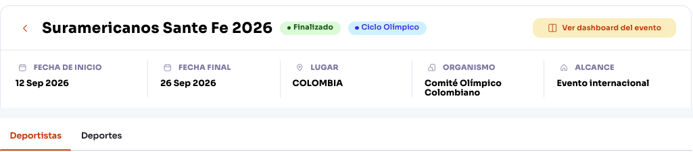
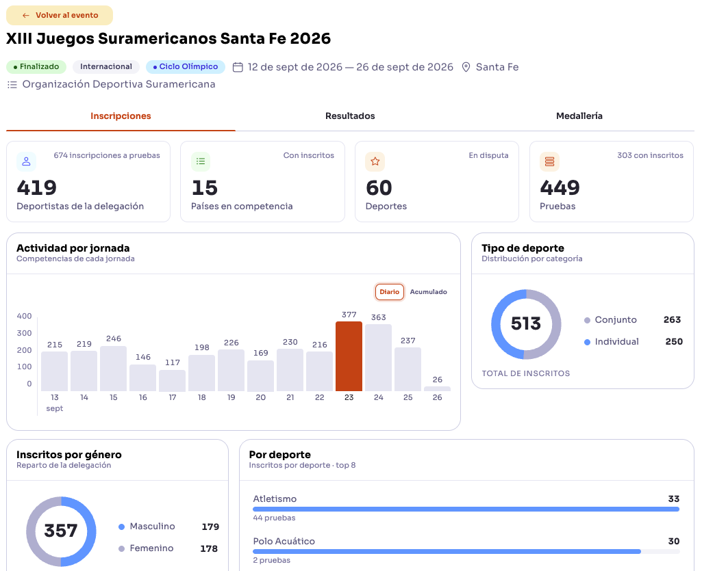

Hoy: el evento se parte en dos pantallas
El dashboard del evento queda detrás de «Ver dashboard del evento».


Costo Para pasar de una a otra hay un botón y un «Volver al evento».
Propuesta: una página, cinco pestañas
Lo que estaba en el dashboard pasa a ser parte del evento.
Qué decidimos y por qué
Una frase cada una.
Una sola página
Quien consulta un evento no cambia de pantalla.
Mismas pestañas siempre
Se aprende una vez y sirve en todos los eventos.
Del resumen al detalle
Indicadores arriba, tablas abajo, explicaciones en el ⓘ.
Sin enlaces vacíos
El menú solo lista lo que tiene contenido.
Plataforma y landing iguales
Mismos datos y estructura; una cifra no cambia según dónde se mire.
Sin scroll horizontal
Accesible por teclado y legible en cualquier pantalla.
Qué cuesta el botón
Pasos para ver Medallería. Recorrido ilustrativo, no una medición.
1 clic
3 pasos
Dashboard y evento, cada uno con su pregunta
Separar sí, pero por lo que responde cada uno, no escondiendo uno.
| Dashboard Ciclo Olímpico | Evento | |
|---|---|---|
| Pregunta | ¿Cómo vamos en el ciclo? | ¿Qué pasa en este evento? |
| Alcance | Varios eventos | Un evento |
| Uso | Análisis y decisión | Seguimiento diario |
| Entrada | Ítem propio del menú | Listado → evento |
Dashboard visible
Primer ítem del menú.
Puentes
Del evento al dashboard y de vuelta, con el evento ya elegido.
Nombres propios
«Panorama del ciclo» y «Evento».
Qué proponemos
Dashboard visible, evento completo en una página y un botón solo como atajo.